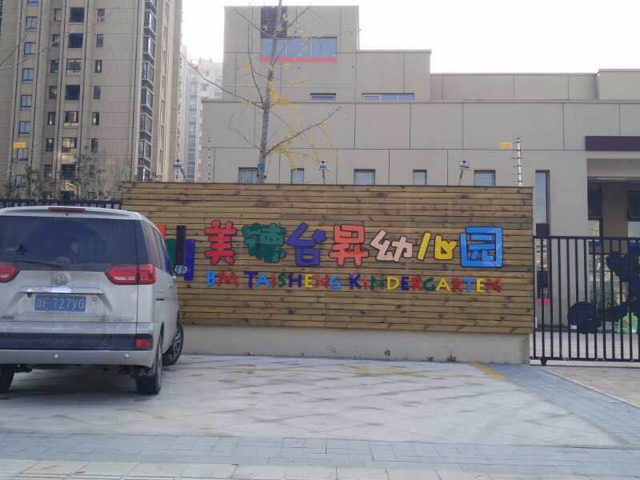
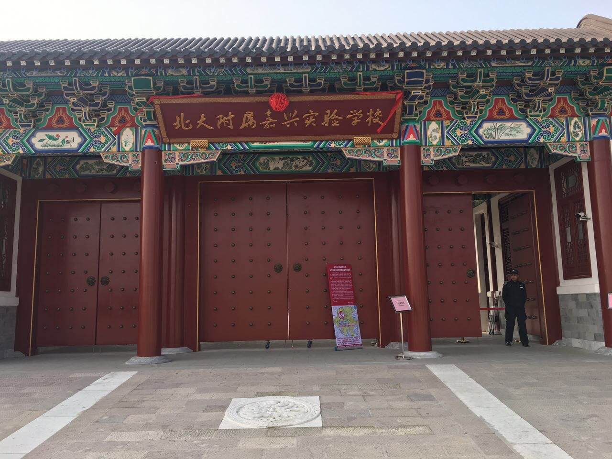
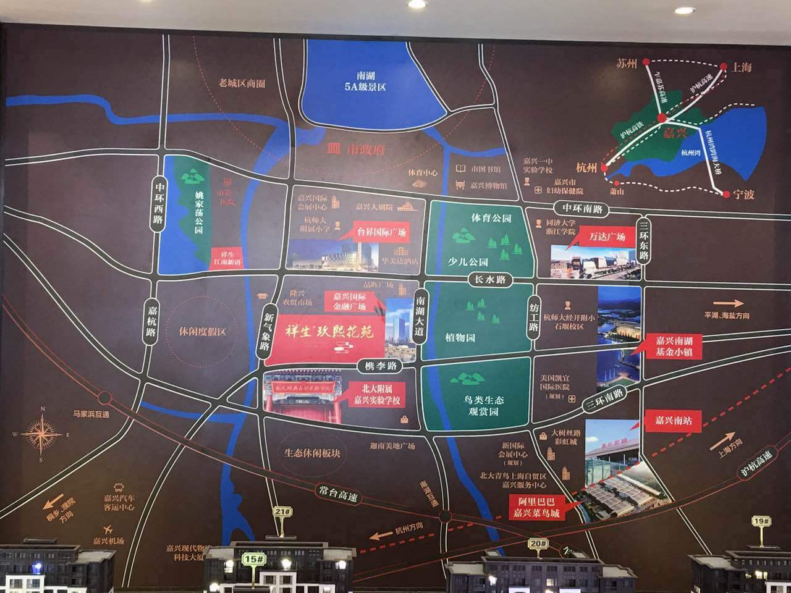

祥生玖溪花苑 洋房 住宅 得房率高
- 10000/㎡左右
- 楼盘价格：
- 嘉兴市新气象路与槜李路交叉口
- 楼盘地址：
- 85㎡、92㎡
- 户型面积：
- 2017年2月13日开始踩盘
- 开盘时间：
- 预计2018年12月
- 交房时间：
- 1700套，高层16幢，洋房6幢
- 楼盘套数：
- 地上386，地下1174
- 车位数量：
- 联系电话：
户型介绍
- 3房2厅2卫在售 建筑面积： 85㎡
- 3房2厅2卫在售 建筑面积：92㎡
- 周边学校
- 商业配套
- 交通
- 医院
- 公园
- 北大附属嘉兴实验学校
- 杭师大附属实验学校
- 嘉兴一中
 
- 台昇国际广场
- 晶辉广场
- 嘉兴国际金融广场
- 迦南美地广场
- 距离常台高速5分钟车程，嘉兴高铁南站10分

- 嘉兴市第一人民医院
- 凯宜国际医院
- 中央公园
- 体育公园
- 少儿公园
- 嘉兴植物园